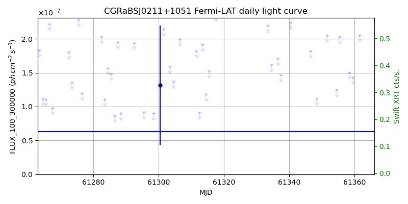
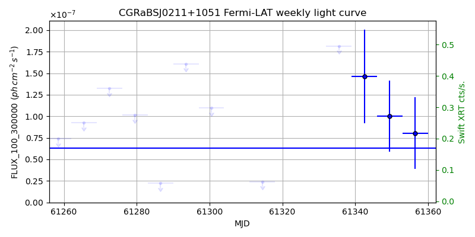
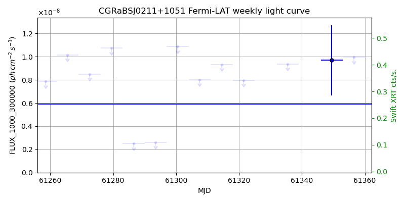

LAT Lightcurve site: https://fermi.gsfc.nasa.gov/ssc/data/access/lat/msl_lc/source/CGRaBS_J0211p1051
Swift site: https://www.swift.psu.edu/monitoring/source.php?source=CGRaBSJ0211+1051
NED: Query
Time of last update of this page: UT: 2026-11-20 16:12 (MJD: 61364.675)
| Property | Value |
|---|---|
| R.A. | 2:11:13.20 |
| Dec. | 10:51:36.0 |
| z | 0.200 |
| 3FGL SpectrumType | LogParabola |
| 3FGL PL Index | |
| 3FGL Flux_100_300000 | 6.33e-08 1 / (s cm2) |
| 3FGL Flux_1000_300000 | 5.93e-09 1 / (s cm2) |
| 3FGL Flux >200 GeV | 4.84e-12 1 / (s cm2) |
| 3FGL Extrap. Crab >200 GeV | 0.02 |
| 3FGL Flux After EBL Absorption >200GeV | 2.53e-12 1 / (s cm2) |
| 3FGL EBL Crab Fraction >200GeV | 0.01 |

| MJD | dMJD | Flux | dFlux | Frac3FGL | FracCrab>200GeV | EBLFracCrab>200GeV |
|---|---|---|---|---|---|---|
| 61359.50 | 0.50 | 1.43e-07 | 0.00e+00 | 0.00 | 0.00 | 0.00 |
| 61360.50 | 0.50 | 4.32e-07 | 0.00e+00 | 0.00 | 0.00 | 0.00 |
| 61361.50 | 0.50 | 2.06e-07 | 0.00e+00 | 0.00 | 0.00 | 0.00 |
| 61362.50 | 0.50 | 6.87e-07 | 0.00e+00 | 0.00 | 0.00 | 0.00 |
| 61363.50 | 0.50 | 9.84e-07 | 0.00e+00 | 0.00 | 0.00 | 0.00 |

| MJD | dMJD | Flux | dFlux | Frac3FGL | FracCrab>200GeV | EBLFracCrab>200GeV |
|---|---|---|---|---|---|---|
| 61328.50 | 3.50 | 8.60e-07 | 0.00e+00 | 0.00 | 0.00 | 0.00 |
| 61335.50 | 3.50 | 1.82e-07 | 0.00e+00 | 0.00 | 0.00 | 0.00 |
| 61342.50 | 3.50 | 1.46e-07 | 5.44e-08 | 2.31 | 0.05 | 0.03 |
| 61349.50 | 3.50 | 1.00e-07 | 4.12e-08 | 1.58 | 0.03 | 0.02 |
| 61356.50 | 3.50 | 8.05e-08 | 4.15e-08 | 1.27 | 0.03 | 0.02 |
| MJD | dMJD | Flux | dFlux | Frac3FGL | FracCrab>200GeV | EBLFracCrab>200GeV |
|---|---|---|---|---|---|---|
| 61359.50 | 0.50 | 4.71e-08 | 0.00e+00 | 0.00 | 0.00 | 0.00 |
| 61360.50 | 0.50 | 2.16e-08 | 0.00e+00 | 0.00 | 0.00 | 0.00 |
| 61361.50 | 0.50 | 1.05e-07 | 0.00e+00 | 0.00 | 0.00 | 0.00 |
| 61362.50 | 0.50 | 3.39e-08 | 0.00e+00 | 0.00 | 0.00 | 0.00 |
| 61363.50 | 0.50 | 6.34e-08 | 0.00e+00 | 0.00 | 0.00 | 0.00 |

| MJD | dMJD | Flux | dFlux | Frac3FGL | FracCrab>200GeV | EBLFracCrab>200GeV |
|---|---|---|---|---|---|---|
| 61328.50 | 3.50 | 1.49e-07 | 0.00e+00 | 0.00 | 0.00 | 0.00 |
| 61335.50 | 3.50 | 9.38e-09 | 0.00e+00 | 0.00 | 0.00 | 0.00 |
| 61342.50 | 3.50 | 1.64e-08 | 0.00e+00 | 0.00 | 0.00 | 0.00 |
| 61349.50 | 3.50 | 9.69e-09 | 3.02e-09 | 1.63 | 0.03 | 0.02 |
| 61356.50 | 3.50 | 9.97e-09 | 0.00e+00 | 0.00 | 0.00 | 0.00 |
--------------------------------------------------------- Using user-supplied coords: 2:11:13.20 10:51:36.0 2000 --------------------------------------------------------- FLWO UT night of: 2026-11-21 Local Sid. @ Midnight: 03:37 Sunset (-15.0) (local, UT): 18:33 01:33 Sunrise (-15.0) (local, UT): 05:47 12:47 Moonrise (local, UT): Moonset (local, UT): 03:40 10:40 Moon phase: 0.85 --------------------------------------------------------- AzTime LSID UT Obj_el Obj_az Mn_el Mn_az Sep. --------------------------------------------------------- 18:33 22:09 01:33 30.4 95.9 47.9 117.4 24.0 19:03 22:39 02:03 36.8 100.4 53.3 125.0 23.8 19:33 23:09 02:33 43.0 105.6 58.2 134.7 23.6 20:03 23:39 03:03 49.1 111.7 62.3 146.9 23.4 20:33 00:09 03:33 54.9 119.1 65.1 162.1 23.2 21:03 00:39 04:03 60.2 128.7 66.3 179.7 23.1 21:33 01:09 04:33 64.7 141.3 65.4 197.5 22.9 22:03 01:39 05:03 68.0 157.9 62.9 213.2 22.7 22:33 02:09 05:33 69.3 177.9 59.0 225.9 22.6 23:03 02:39 06:03 68.4 198.3 54.2 235.9 22.4 23:33 03:09 06:33 65.5 215.7 48.9 243.9 22.2 00:03 03:39 07:03 61.1 229.1 43.2 250.4 22.0 00:33 04:10 07:33 55.9 239.2 37.3 255.9 21.8 01:03 04:40 08:03 50.2 247.0 31.2 260.7 21.6 01:33 05:10 08:33 44.2 253.3 25.1 265.1 21.4 02:03 05:40 09:03 38.0 258.6 19.0 269.2 21.1 02:33 06:10 09:33 31.7 263.3 12.9 273.0 20.9 03:03 06:40 10:03 25.3 267.5 6.8 276.9 20.6 03:33 07:10 10:33 18.9 271.5 1.0 280.7 20.4 04:03 07:40 11:03 12.6 275.3 -4.9 284.7 20.1 04:33 08:10 11:33 6.3 279.1 -11.1 288.8 19.8 05:03 08:40 12:03 0.4 283.0 -16.8 293.2 19.5 05:33 09:10 12:33 -6.2 287.1 -22.3 298.1 19.2 05:47 09:25 12:47 -9.2 289.1 -24.8 300.5 19.0 --------------------------------------------------------- Dark hours >55 deg.: 0.00